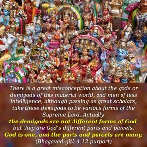
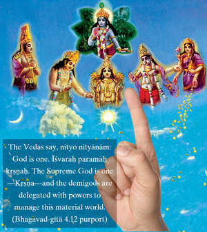

Men in this world desire success in fruitive activities, and therefore they worship the demigods. Quickly, of course, men get results from fruitive work in this world.


There is a great misconception about the gods or demigods of this material world, and men of less intelligence, although passing as great scholars, take these demigods to be various forms of the Supreme Lord. Actually, the demigods are not different forms of God, but they are God’s different parts and parcels. God is one, and the parts and parcels are many. The Vedas say, nityo nityānām: God is one. Īśvaraḥ paramaḥ kṛṣṇaḥ. The Supreme God is one – Kṛṣṇa – and the demigods are delegated with powers to manage this material world. These demigods are all living entities (nityānām) with different grades of material power. They cannot be equal to the Supreme God – Nārāyaṇa, Viṣṇu, or Kṛṣṇa. Anyone who thinks that God and the demigods are on the same level is called an atheist, or pāṣaṇḍī. Even the great demigods like Brahmā and Śiva cannot be compared to the Supreme Lord. In fact, the Lord is worshiped by demigods such as Brahmā and Śiva (śiva-viriñci-nutam). Yet curiously enough there are many human leaders who are worshiped by foolish men under the misunderstanding of anthropomorphism or zoomorphism. Iha devatāḥ denotes a powerful man or demigod of this material world. But Nārāyaṇa, Viṣṇu, or Kṛṣṇa, the Supreme Personality of Godhead, does not belong to this world. He is above, or transcendental to, material creation. Even Śrīpāda Śaṅkarācārya, the leader of the impersonalists, maintains that Nārāyaṇa, or Kṛṣṇa, is beyond this material creation. However, foolish people (hṛta-jñāna) worship the demigods because they want immediate results. They get the results, but do not know that results so obtained are temporary and are meant for less intelligent persons. The intelligent person is in Kṛṣṇa consciousness, and he has no need to worship the paltry demigods for some immediate, temporary benefit. The demigods of this material world, as well as their worshipers, will vanish with the annihilation of this material world. The boons of the demigods are material and temporary. Both the material worlds and their inhabitants, including the demigods and their worshipers, are bubbles in the cosmic ocean. In this world, however, human society is mad after temporary things such as the material opulence of possessing land, family and enjoyable paraphernalia. To achieve such temporary things, people worship the demigods or powerful men in human society. If a man gets some ministership in the government by worshiping a political leader, he considers that he has achieved a great boon. All of them are therefore kowtowing to the so-called leaders or “big guns” in order to achieve temporary boons, and they indeed achieve such things. Such foolish men are not interested in Kṛṣṇa consciousness for the permanent solution to the hardships of material existence. They are all after sense enjoyment, and to get a little facility for sense enjoyment they are attracted to worshiping empowered living entities known as demigods. This verse indicates that people are rarely interested in Kṛṣṇa consciousness. They are mostly interested in material enjoyment, and therefore they worship some powerful living entity.